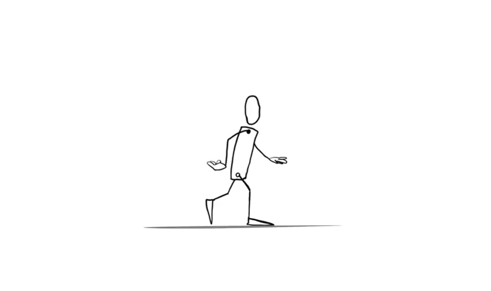

Walk Cycle
Animación 2D con líneas limpias.

Loop 1
Loop infinito de personaje corriendo.
Una galería de mis ciclos de caminata, loops y personajes animados.
Animación 2D con líneas limpias.
Loop infinito de personaje corriendo.